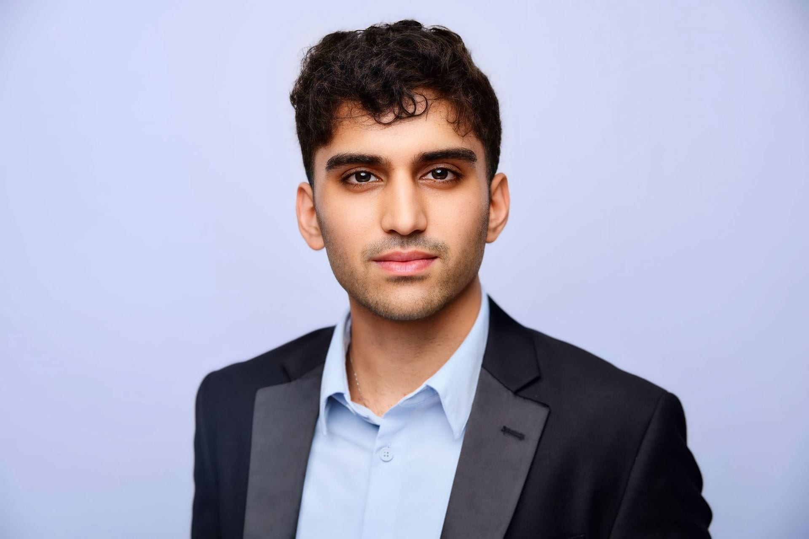
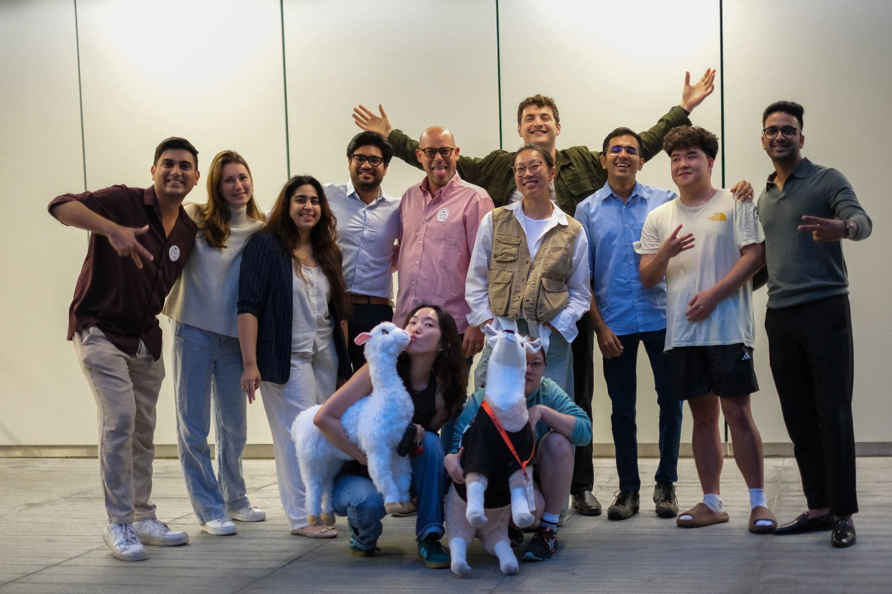
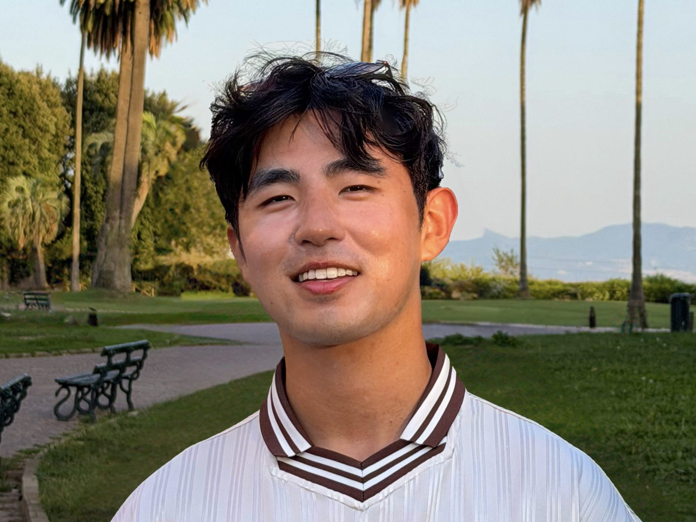
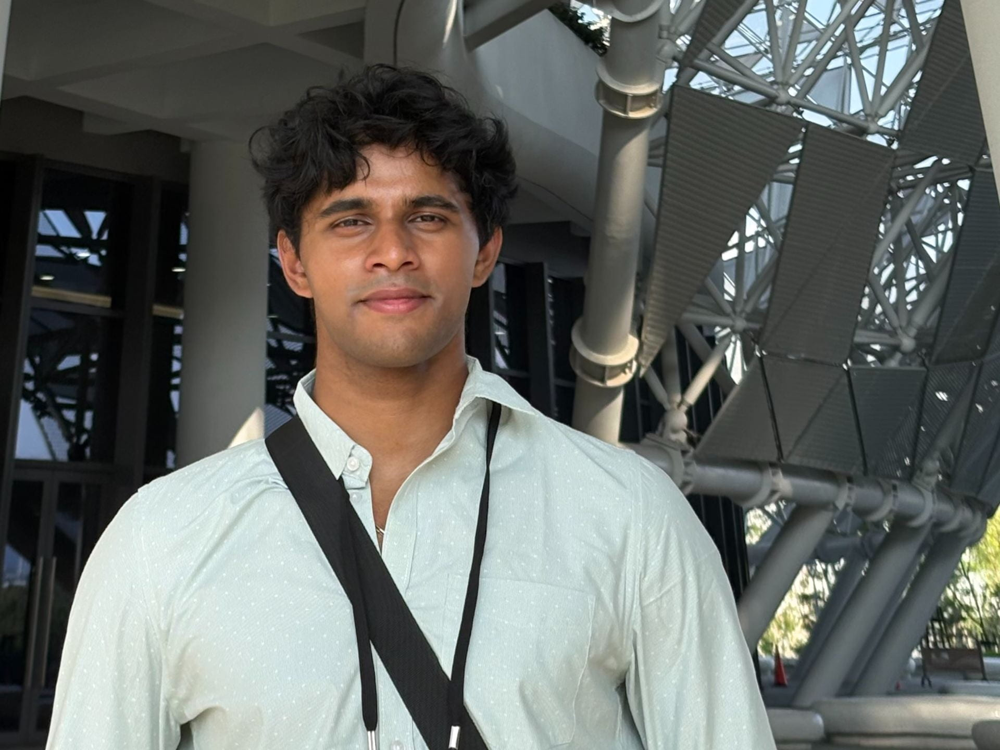
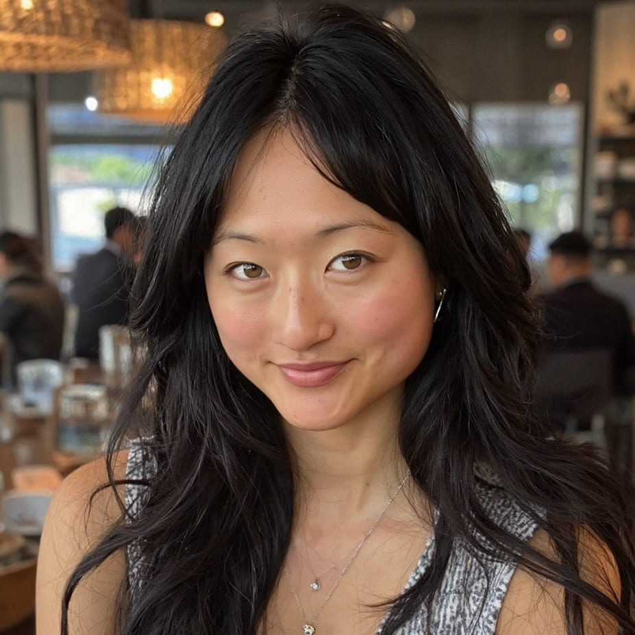
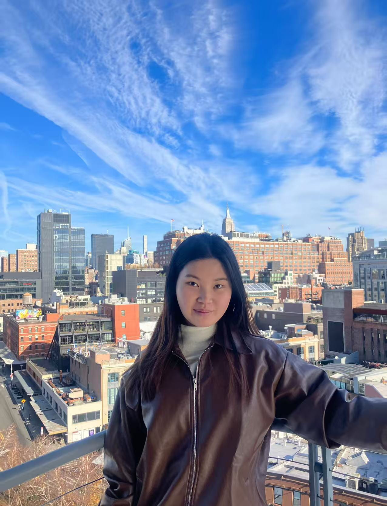
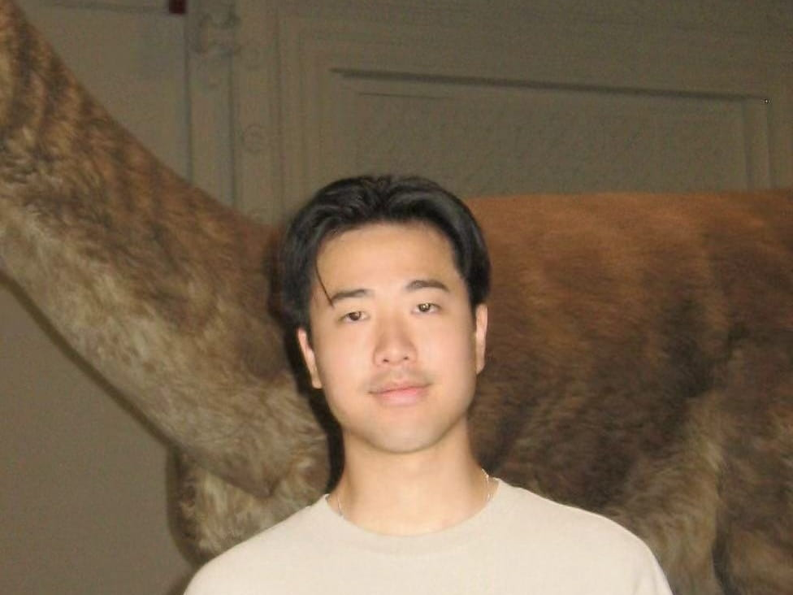
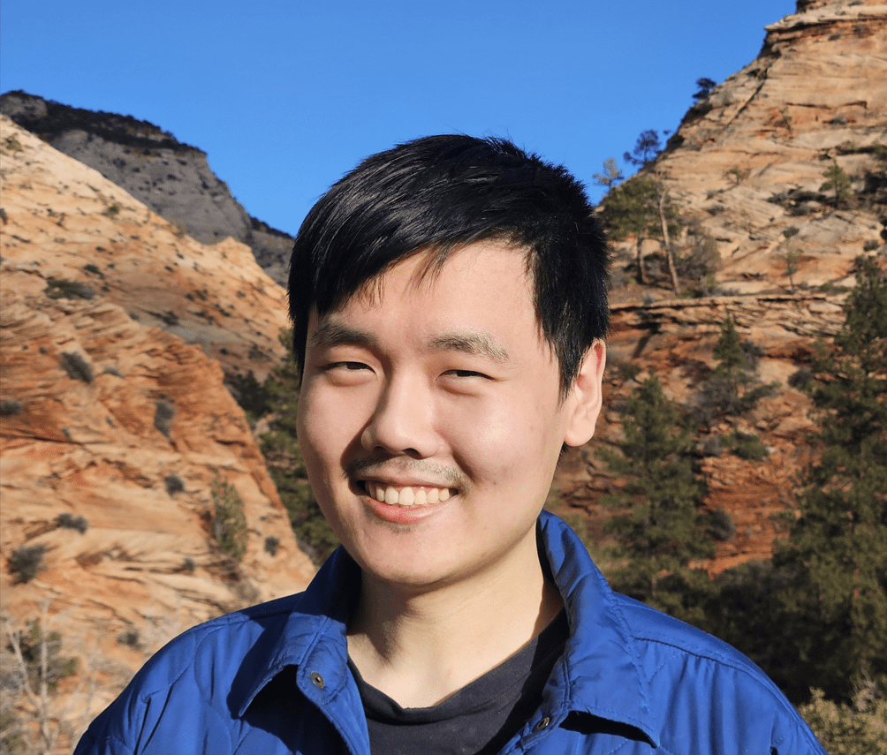
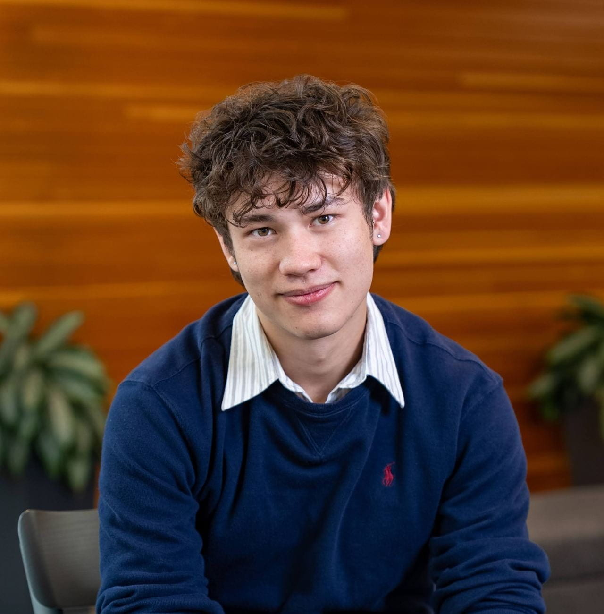
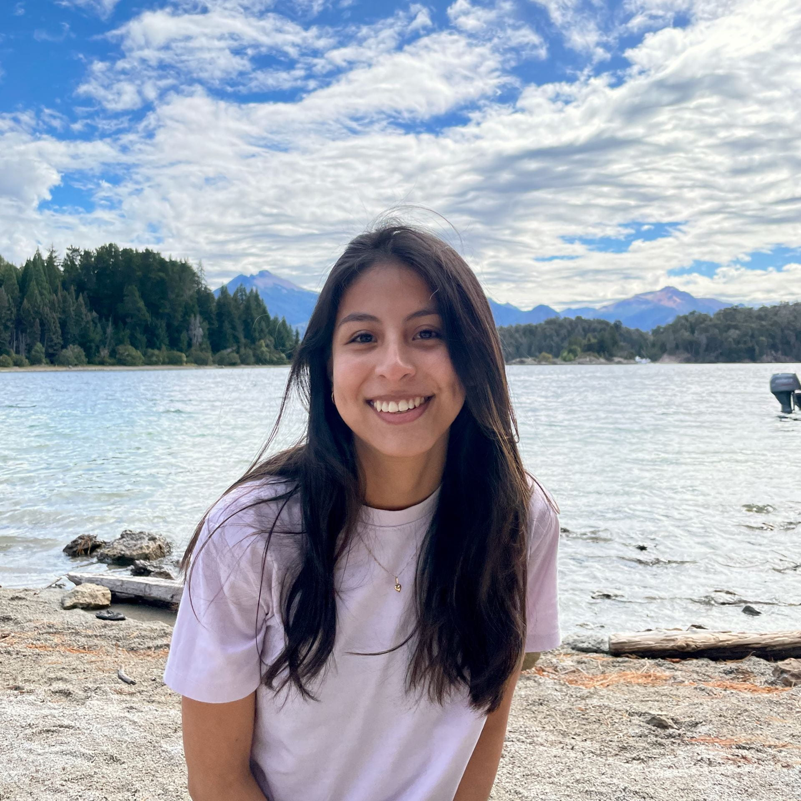

Members
Executive Board
Maxime Hendryx-Parker - Technical President
Maxime Hendryx-Parker is a Master of Engineering in Computer Science student at Cornell Tech. He earned his B.S. in Computer and Information Technology at Ball State University. He enjoys finding unusual solutions to problems and turning them into practical applications, with interests in entrepreneurship, embedded systems, and home automation. Having attended and volunteered at technology conferences, he values the connections and ideas that come from bringing people with different backgrounds together. At Cornell Tech, he’s excited to collaborate across disciplines, strengthen connections with alumni and industry, and help students feel heard and involved in their community.
Fun fact: He’s half French, and he loves baking.
Robbie Dornbush - Professional President
Throughout Robbie’s career, Robbie has been building a brighter future alongside visionary leaders at world class institutions. In the Biden-Harris White House, Robbie served as Chief of Staff to the White House Press Team where he directed diverse stakeholders to communicate the President’s agenda to the world. As Chief of Staff of Accountable Tech, a tech policy nonprofit, Robbie managed a cross-disciplinary group of campaigners and technologists to shape policy at all levels of government in the public interest. At the start of his career, Robbie designed campaigns on behalf of responsible tech orgs like Mozilla Foundation, Wikipedia, and the Center for Humane Technology to advocate for equitable, impactful change in the tech industry. Now, Robbie is pursuing his MBA through the Cornell SC Johnson College of Business and Cornell Tech to create a brighter future at the intersection of technology, policy, and public affairs.
Fun fact: Robbie is a former aspiring child actor who also did standup and sketch comedy in college.
Unser Jaffry - Treasurer

Unser Jaffry is an MBA candidate at Cornell, with a background spanning healthcare, biotechnology, entrepreneurship, and strategy. Originally from Michigan, he earned his B.S. in Human Biology from Michigan State University, where he also founded the Medical Entrepreneurs Club. Before Cornell, Unser conducted biomedical research at Harvard Medical School and MIT and worked in strategy and operations across clinical research and healthcare innovation.
At Cornell, he is especially interested in the intersection of technology, healthcare, and entrepreneurship and is excited to serve as Treasurer of Cornell Tech Student Government, helping support initiatives that strengthen the student experience and bring the Cornell Tech community together.
Fun fact: Unser is a longtime chess fan, loves exploring new startup ideas, and is always down for a competitive game.
TBD - Student Activities Co-Chair

Anusha Ramachandrareddy - Communications Co-Chair
Anusha is a graduate student pursuing her Master’s in Computer Science at Cornell Tech. She gained hands-on experience as an intern at Roboticschools by contributing to Artificial Intelligence, Machine Learning, and Robotics projects. She is skilled in Natural Language Processing, Artificial Intelligence, and Robotics, with a passion for creating innovative, data-driven solutions. She is always excited to collaborate with diverse teams to advance impactful applications.
Fun fact: Most likely to throw a tantrum if she doesn’t drink chai(Tea) at least once a day!!
TBD - Communications Co-Chair
TBD - External Affairs Chair
TBD - Diversity and Inclusion Chair
Master’s Program Representatives
Jovian Wang - M.Eng. CS Rep

Jovian is a Master of Engineering student in Computer Science at Cornell Tech. He earned his undergraduate degrees in Computer Science and Economics at Vanderbilt University, graduating cum laude, and spent two years as a data infrastructure engineer building out large-scale observability systems and integrating AI into various platforms. His experience spans data infrastructure, machine learning, and site reliability, and he is interested in building products that hold up in the real world. He’s excited to help make Cornell Tech a place where great engineers become greater founders.
Fun fact: Jovian is an avid snowboarder, a V4 climber, a casual tennis player, and a sci-fi geek.
Kartick Rajen - M.Eng. ECE Rep

I’m Kartick Rajen, friends call me Karr. My bachelor’s degree was in Computer Engineering, structured as a co-op program split between India and Taiwan. I have experience applying quantitative skills across financial engineering, computer vision, edge AI and biomedical research.
Currently, I’m doing research at Weill Cornell Medicine, working on probabilistic modeling. Excited to bring this varied, cross-domain background to the cohort.
Fun fact: Taught guitar part-time during bachelor’s. Soccer and card games are my go-to ways to unwind.
Rachel Liu - M.Eng. ORIE Rep

Hey y’all! My name is Rachel Liu, I’m originally from San Francisco but earned my B.S in Psychobiology and Human-Computer Interaction from UCLA. I’ve lived in Bushwick, New York for the last 3 years working as a UX Researcher, then PM for Autodesk. I’m passionate about building community, creative technology, optimizing logistics, and am so pumped to be representing the brilliant students that are the ORIE class of 2027.
Fun fact: I’m a SuperMaker at the MakerLAB here on campus, recently returned from my first solo trip across Europe, and need to eat at least one pancake per day.
TBD - M.Eng. DSDA Rep
Lillian Li - M.S. Connective Media '27 Cohort Rep

Hey everyone, I am Lillian, and I’m excited to serve as the Student Representative for CM ‘27！💫 My experience as RUC debate team president, and a member of cross-cultural organizations like Lavender club in Berkeley and FACES Stanford has taught me how to listen, communicate, and bring people together. I also speak English, Mandarin, Japanese, and a little French 🌍, and I’m passionate about creating an inclusive space where everyone feels heard. What I love most about our CT community is how incredibly welcoming and supportive it is. It’s full of inspiring people, and I’m eager to contribute to strengthen those bonds even further.🙌
Fun Fact: I can wake up at whatever time I want without an alarm！ I love reading detective novels and guessing who the culprit is before the reveal🤔.
Yun-Chung (Eric) Liu - M.S. Connective Media '28 Cohort Rep

I’m Yun-Chung (Eric) Liu, and I grew up between Shanghai, Taiwan, and Michigan before studying Computer Science with a minor in Human-Computer Interaction at Washington University in St. Louis. I spent the last three years as a Software Engineer at Morningstar in Chicago, building data delivery systems and dashboards used by thousands of clients.
My passion has always sat at the intersection of finance and technology, and I’m excited to keep exploring that with our cohort.
Fun fact: I’m constantly scrolling XHS and TikTok for new recipes to try!
Jiwon Jeong - M.S. Health Tech '27 Cohort Rep

I’m Jiwon, an aspiring ML researcher for generative AI and geometric deep learning. My work focuses on protein molecular dynamics and machine learning for biomolecular systems. At UC Berkeley, I was involved in wet-lab research for structural biology – the process of how we use really big microscopes to study really small things.
Excited to support our cohort’s vision for integrating technology into clinical and biomedical advancements.
Fun Fact: My sister and I like cooking two things together: Asian hotpot and spaghetti.
Aidan Cuccaro - M.S. Health Tech '28 Cohort Rep

Aidan is a health tech student passionate about applying machine learning to the US healthcare system. He grew up in Corvallis, Oregon, where he also earned his undergraduate degree in Computer Science at Oregon State University. There, he applied his studies to NMR research and designed supplementary instruction for CS students. Outside of class, you can (try to) find him around the city — he refuses to stay still. Whether it’s sparring in martial arts, playing piano, or improving his tailoring skills, Aidan believes every hobby is practice for a problem he hasn’t run into yet.
Fun fact: He speaks Japanese (N3) and hopes to learn more Mandarin this year. He was also a lion dance performer!
Gabriela Yaulli - M.S. Urban Tech '27 Cohort Rep

Gabriela is the Urban Tech representative for the class of 2027. She has experience building AI systems with a focus on bridging technical innovation and social impact in urban development. At Cornell Tech, she aims to explore geospatial data analysis and computational methods to tackle urban challenges in emerging markets, as well as learn more about ML safety and ethics.
Fun Fact: I love trying new creative pursuits – this past year I’ve dove into contemporary dance, rug making and pottery!
TBD - M.S. Urban Tech '28 Cohort Rep
TBD - MBA Rep
TBD - LLM Rep